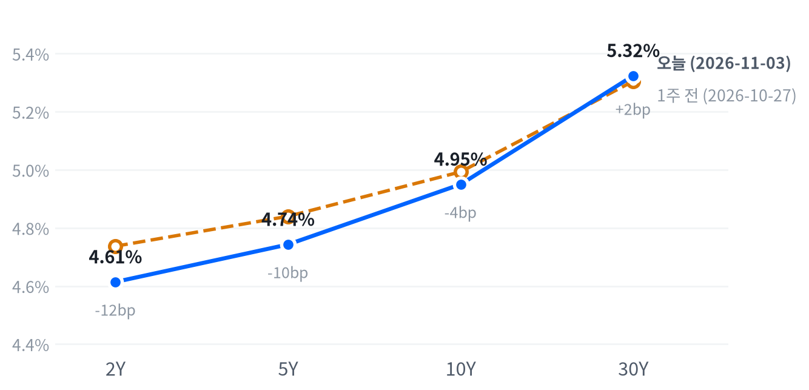

전날 팔렸던 반도체와 대형 기술주가 되살아나 나스닥이 올랐지만, 애플의 마진 가이던스와 필수소비재·소재 약세에 다우는 내렸다. 평균적인 종목은 지수를 따라가지 못해 이날 상승은 소수의 대형주가 만들었다.
9월 JOLTS 구인건수가 예상을 크게 넘자 2년물과 장기물 금리가 함께 올라 장단기 금리차가 넓어졌다. 유가가 아니라 고용 지표가 금리를 움직인 하루로 보고, 11월 6일 10월 고용보고서를 다음 분기점으로 둔다.
중간선거 투표일, 시장은 전날 팔았던 반도체와 대형 기술주를 다시 샀고 오전에 나온 고용 지표가 국채금리를 끌어올렸다. 엔비디아가 S&P 상승 기여 1위에 오르고 마이크로소프트·오라클이 함께 반등해 S&P500은 3거래일 연속 하락을 끝냈다. 10:00(ET) 발표된 9월 JOLTS 구인건수는 7,523K로 컨센서스(715만 건)를 크게 넘었고, 2년물부터 30년물까지 금리가 모두 올랐다.
이날 금리 상승은 유가가 아니라 노동 지표가 정책금리 경로를 다시 끌어올린 결과로 본다. 유가는 16:00 ET 기준 거의 제자리였고 10년 기대인플레도 거의 움직이지 않았으며, CME FedWatch 기준 12월 인상 확률이 장 전 77%에서 장 마감 무렵 79~81%로 올랐다는 보도가 나왔다. 가장 강한 반론은 BLS 스스로 구인건수를 「거의 변화 없음」으로 평가했고 8월 해고가 상향 수정됐다는 점이다. 시장이 헤드라인을 과하게 읽었을 수 있다. 반도체 반등 안에서 미국 메모리주는 애플이 메모리 원가 상승을 이유로 12월 분기 마진 가이던스를 낮춘 것을 가격 강세의 확인으로 받았다고 본다. 애플 발표 뒤 열린 한국 증시가 같은 재료에 메모리주를 팔았다는 점이 반대 증거이고, 메모리 가격 정점에 대한 시장 가격 기반 기대는 측정할 수 없어 시장 기대와 우리 해석의 차이는 아직 알 수 없다.
3개월 시계에서 하루 반등은 반도체·AI 하드웨어 업종의 상대수익률 악화를 되돌리기에 작다. 메모리주 반등이 업종 고유의 재료에서 나온 것인지는 AMD 실적이 정규장에 반영되는 11월 4일부터 확인하고, 그때까지 새 아이디어를 내지 않고 판단을 보류한다. 2년물이 노동 지표에 반응하는 동안에는 소형주·유틸리티·부동산처럼 금리에 민감한 업종의 상대 강세를 기대하기 어렵고, 이날 러셀2000이 오전 상승을 모두 내주고 저점권에서 끝난 것도 같은 방향이다. GE 버노바·버티브가 이끈 전력망 관련주 반등은 선거 결과가 나오기 전의 반응이라 전력망 투자 테마의 판단을 바꾸지 않는다.
메모리 판단은 11월 3일 종가 대비 11월 6일 종가로 잰다. 마이크론·웨스턴디지털·시게이트 단순평균 누적 등락률에서 나스닥 누적 등락률을 뺀 값이 +5.07%p 이상이면 애플의 원가 경고가 메모리주 반등을 이어 가게 한다는 판단을 뒷받침하고, 같은 폭 이상 뒤처지면 판단은 약해지며 키옥시아발 가격 정점 우려를 우선 설명으로 본다. 그 사이면 결론을 내지 않는다. 금리 쪽 판단은 11월 4일 ISM 서비스업·ADP와 5일 실업수당 청구를 거쳐, 11월 6일 08:30(ET) 10월 고용보고서에서 다시 확인한다.
| 지수 | 종가 | 등락 | 기준일 |
|---|---|---|---|
| 닛케이225 | 63,081.86 | -0.33% | 11월 2일 |
| 항셍 | 23,393.32 | +0.42% | 11월 2일 |
| 상해종합 | 3,638.03 | +1.08% | 11월 2일 |
| DAX | 25,981.09 | +0.63% | 11월 2일 |
| FTSE100 | 10,638.43 | -1.14% | 11월 3일 |
| 유로스톡스50 | 6,176.06 | +0.73% | 11월 2일 |
| VIX | 20.83 | -0.32p | 11월 3일 |
아시아 세 지수와 DAX·유로스톡스50은 들어온 마지막 종가인 11월 2일 값이고, FTSE100과 VIX는 11월 3일 값이다. VIX 등락은 포인트다.
미국은 앞서 끝난 아시아의 오름세를 이어 갔고 유럽은 보합권이었다. 두 지역 모두 지역 안에서도 갈렸다. 11월 2일 아시아에서는 상해종합이 1.08%, 항셍이 0.42% 올랐지만 닛케이는 0.33% 내렸고, 일본은 11월 3일 휴장이었다. 유럽은 11월 3일 장을 마친 FTSE100이 1.14% 내렸고, 마지막 값이 11월 2일인 DAX와 유로스톡스50은 올랐다.
개장 전 선물은 서울의 메모리 매도와 반대로 움직였다. 애플 실적 발표 뒤 열린 한국 증시에서 삼성전자는 4.15%, SK하이닉스는 5.03% 내렸지만, S&P 선물(ES)은 02:00(ET) 7,546 저점에서 08:30(ET) 7,605 고점까지 올랐고 나스닥 선물(NQ)도 같은 시각 28,427이 고점이었다. 같은 시간 미국의 이란 케심 섬 공격 보도에 유가가 급등락했다. 현물은 S&P +0.15%, 나스닥 +0.38%, 러셀2000 +0.23%의 갭으로 올라 출발했다.
평균적인 종목은 지수를 따라가지 못했다. S&P 동일가중 지수가 시총가중 지수보다 0.63%p 뒤져, 이날 상승은 소수가 끌어올림으로 요약된다. S&P와 나스닥은 하루 범위 중간에서 끝났고, 러셀2000은 저점권에서 끝났다.
저점권·고점권 경계는 최근 2,253거래일의 일간 종가 위치 이력으로 다시 잰 기준이다.
반도체 반등이 나스닥을, 애플의 마진 가이던스가 다우를 움직였고, 필수소비재와 소재가 업종 최하위로 밀렸다. 장 마감 뒤에는 AMD가 데이터센터 매출이 거의 두 배로 늘고 4분기 매출 가이던스가 시장 추정을 넘었다고 밝혀 시간외에서 8% 올랐다는 보도가 나왔다. 시간외 가격은 정규장 종가와 다르다. 중간선거 결과는 장 마감 뒤에 나오고, 선거를 장중 가격과 연결한 보도는 찾지 못했다.
출처: CNBC, Invezz, BigGo
| 지수 | 종가 | 등락률 |
|---|---|---|
| S&P500 성장주 | 134.54 | +1.12% |
| 나스닥 | 25,372.01 | +0.83% |
| S&P500 | 7,568.92 | +0.36% |
| 러셀2000 | 2,812.45 | +0.23% |
| 다우존스 | 51,786.72 | -0.38% |
| S&P500 가치주 | 238.33 | -0.61% |
| 섹터 | 등락률 |
|---|---|
| 기술 | +1.31% |
| 커뮤니케이션서비스 | +1.18% |
| 산업재 | +0.95% |
| 부동산 | +0.07% |
| 헬스케어 | -0.31% |
| 유틸리티 | -0.57% |
| 금융 | -0.64% |
| 경기소비재 | -0.70% |
| 에너지 | -0.85% |
| 소재 | -2.01% |
| 필수소비재 | -2.07% |
반도체가 이끈 상승은 좁았다. S&P500은 0.36% 오른 7,569, 나스닥은 0.83% 오른 25,372로 끝났다. 다우는 0.38% 내린 51,787, 러셀2000은 0.23% 오른 2,812다. 네 지수 모두 평소 하루 움직임보다 작게 움직였고 러셀2000은 거의 움직이지 않았다. 11개 업종 가운데 일곱이 내렸고, 전날 올랐던 경기소비재·금융·필수소비재가 하루 만에 하락으로 돌아섰다.
장중 궤적은 지수마다 달랐다. 나스닥은 개장가가 그날의 저점이었고 13:00(ET)까지 개장가보다 0.84% 올랐다가 상승폭 일부를 내주고 하루 범위 중간에서 끝났다. 러셀2000은 11:00(ET) 개장가보다 0.87% 높은 고점에서 꺾여 오전 상승을 모두 내주고 저점 부근에서 마감했다. 꺾인 시점은 JOLTS 발표 뒤 국채금리가 오른 시간과 겹치지만, 장중 금리 자료가 없어 금리 상승이 소형주를 꺾었는지는 확인하지 못했다.
지수 상승은 기술과 커뮤니케이션 두 업종이 만들었다. 추정 기여도로 기술이 +0.44%p, 커뮤니케이션서비스가 +0.16%p를 보탰고 산업재가 +0.06%p를 더했다. 경기소비재(-0.09%p)·금융(-0.07%p)·필수소비재(-0.07%p)가 이를 깎았고, 업종 합으로 설명되지 않는 부분은 +0.01%p다.
추정 기여도는 업종 비중을 직접 받지 않아, 최근 252거래일 지수·업종 수익률로 추정한 비중을 곱한 값이다. 소재와 부동산은 비중을 추정할 수 없어 빠졌다.
이 상승을 추세 회복으로 보기는 이르다. 성장주가 1.12% 오르는 동안 가치주는 0.61% 내려, 상승은 반도체와 대형 기술주 몇 종목에 몰렸다. 전날 매도가 몰렸던 종목군의 되돌림으로 본다. 필수소비재(-2.07%)와 소재(-2.01%)가 업종 최하위였지만 두 업종의 고유 재료는 확인되지 않았다.
출처: CNBC, Benzinga, Kiplinger
| 만기 | 종가(11월 3일) | 전일比(bp) | 1주 전(10월 27일) | 주간 변화(bp) |
|---|---|---|---|---|
| 2Y | 4.614% | +3.1 | 4.737% | -12.3 |
| 5Y | 4.743% | +5.0 | 4.840% | -9.7 |
| 10Y | 4.950% | +5.6 | 4.993% | -4.3 |
| 30Y | 5.324% | +5.5 | 5.305% | +1.9 |
고용 지표에 국채금리가 만기 전반에서 올랐다. 2년물은 3.1bp 오른 4.614%, 10년물은 5.6bp 오른 4.950%, 30년물은 5.5bp 오른 5.324%다. 10년물은 최근 2년(504거래일) 가운데 이보다 높았던 날이 34일뿐이고, 30년물은 29일뿐인 고점권에 있다.

네이버 국채 종가, 전 만기 11월 3일 기준. 1주 전(10월 27일)보다 2년물은 12.3bp, 5년물은 9.7bp, 10년물은 4.3bp 내렸고 30년물은 1.9bp 올랐다.
하루로는 장기물이 더 오른 베어 스티프닝, 한 주로는 단기물이 크게 내린 불 스티프닝이다. 2s10s는 33.6bp로 11월 2일(31.1bp)보다 넓어졌고, 5s30s는 58.1bp다. 유가 급락 날 멈췄던 커브 가팔라짐이 하루 만에 다시 나타났다.
10년물 상승의 대부분은 기대인플레 밖에서 나왔다고 본다. FRED 기준 11월 3일 10년 기대인플레는 1bp 오른 2.30%였다. 5년 뒤 5년 기대인플레는 2bp 오른 2.21%다. 네이버 명목금리와 출처·시각이 달라 정확한 분해는 아니지만, 10년물 상승 가운데 기대인플레 몫은 1bp 안팎이다. 명목금리를 실질금리와 기대인플레로 나눈 같은 날짜 자료는 11월 2일 것이고, 그날 10년물 3bp 하락은 기대인플레 5bp 하락이 이끌었고 실질금리는 2bp 올랐다. 11월 2일과 3일 사이 금리를 움직인 쪽이 기대인플레에서 실질금리·기간프리미엄으로 바뀌었다.
원인은 JOLTS로 본다. 예상을 넘은 노동시장 지표를 10년물 상승의 주원인으로 짚은 보도가 나왔고, 2년물 상승은 12월 인상 확률 보도가 오른 방향과 같다. 실질금리 쪽 상승은 성장 기대와 기간프리미엄이 모두 만들 수 있고, 중간선거를 앞둔 재정 경로 불확실성이 기간프리미엄을 올렸을 여지도 있다. 기간프리미엄 추정치는 10월 30일 값(0.91%)까지만 있어 이날 두 설명의 몫은 11월 4일 선거 결과 뒤 장기물 반응에서 다시 확인한다.
신용시장은 11월 2일 값까지만 있다. 하이일드 스프레드는 3.43%로 5거래일 사이 13bp 넓어졌고 투자등급 스프레드는 0.94%다.
5년 뒤 5년 명목금리 5.12%, 실질 2.93%(11월 2일 기준). 기대인플레 쪽 수치와의 교차검증은 할 수 없었고, 위험 프리미엄이 섞인 값이다.
출처: CNBC, fnnews
| 통화쌍 | 종가 | 등락률 | 기준일 |
|---|---|---|---|
| DXY | 101.861 | +0.10% | 11월 3일 |
| USD/KRW | 1,344.13 | -0.09% | 11월 3일 |
| USD/JPY | 158.718 | +0.51% | 11월 3일 |
| EUR/USD | 1.1194 | -0.02% | 11월 3일 |
미국 금리 상승에 반응한 통화는 엔화뿐이었다. 엔/달러는 0.51% 오른 158.72엔으로 평소와 비슷한 크기로 움직였고, 달러지수는 0.10% 오른 101.861, 유로/달러는 0.02% 내린 1.1194로 거의 움직이지 않았다. 원/달러는 0.09% 내린 1,344원으로, 최근 2년(504거래일) 가운데 이보다 낮았던 날이 23일뿐인 원화 강세권에 있다.
엔화 약세는 미일 금리차가 설명한다고 본다. 엔/달러는 새벽 저점에서 14:30(ET) 고점까지 하루 내내 올라 고점 부근에서 끝났고, 유로가 거의 움직이지 않아 달러 전반의 강세보다 금리차에 민감한 엔화 쪽 움직임에 가깝다. 일본 금리 자료가 없어 금리차를 직접 재지는 못했다. 160엔 부근에서는 일본 재무성의 개입 경계가 상단을 막고 있다는 분석이 나왔다.
환율은 뉴욕 16:00 ET 가격, 전 거래일 같은 시각 대비다.
출처: Investing.com, Tradingpedia
| 품목 | 종가 | 등락률 |
|---|---|---|
| WTI | $96.54 | +0.70% |
| Brent | $104.20 | +0.20% |
| 천연가스 | $2.904 | +1.33% |
| 금 | $3,931.30 | -0.62% |
유가는 장중 크게 흔들린 뒤 제자리로 돌아왔다. WTI는 0.70% 오른 96.54달러, 브렌트는 0.20% 오른 104.20달러다. 금은 0.62% 내린 3,931달러, 천연가스는 1.33% 오른 2.904달러다. WTI는 전날 급락 뒤에도 최근 2년(504거래일) 가운데 이보다 높았던 날이 46일뿐인 고점권에 있다.
WTI는 개장 전 07:00(ET) 98.82달러까지 올랐다가 08:30(ET) 93.59달러까지 밀렸다. 미국이 이란 케심 섬을 공격했다는 보도가 유가를 끌어올렸지만, 트럼프 대통령과 미군이 공격을 확인하지 않았다는 보도가 뒤따랐다. 이란 외무부는 미 해군 봉쇄가 끝나지 않으면 최종 합의도 호르무즈 재개도 없다고 밝혔다. 장중 급등락을 이 보도들과 직접 연결한 보도는 한 곳뿐이지만, 종가가 거의 변하지 않아 전날 급락에 담긴 협상 기대는 이날 더 커지지도 꺼지지도 않았다고 본다.
금은 국채금리가 오른 날 내렸다. 08:30(ET) 3,982달러까지 올랐다가 밀렸고, 금리 상승과 매파적 베팅에 3,900달러 부근까지 밀렸다는 해석이 나왔다. 10년 실질금리는 11월 2일 값까지만 있어 이날 금과 실질금리의 관계는 확인하지 못한다. 브렌트와 WTI의 가격 차는 7.66달러인데, 표의 WTI는 12월물, 브렌트는 1월물이라 가격 차에는 만기 차이가 들어 있다.
최근 60거래일 동안 열 개 자산의 움직임에서 가장 큰 공통 요인은 전체의 40.1%를 설명하고, 이 요인을 이끄는 것은 주식이다. 이 요인과 함께 움직이는 자산군은 직전 60거래일 구간의 금리에서 원자재로 바뀐 상태가 이어졌다.
원자재·환율은 뉴욕 16:00 ET 가격, 전 거래일 같은 시각 대비다. 결제가와 다를 수 있다.
출처: Invezz, FXStreet
엔비디아(+2.29%)와 모놀리식 파워 시스템즈(+6.78%)는 반도체·AI 하드웨어 관련주의 반등을 이끈 종목이다. 엔비디아는 S&P 상승 기여 1위였고 시가총액에서 애플을 다시 앞섰다는 보도가 나왔다. 투자자들이 칩 종목을 AI 거품의 함정이 아니라 AI 붐의 수혜주로 다뤘다는 해석도 나왔지만, 저가 매수 외에 명시된 재료는 확인되지 않았다. 모놀리식 파워 시스템즈의 이날 고유 재료도 확인되지 않았다.
애플(-1.90%)은 대형 기술주 가운데 혼자 밀려 다우를 끌어내렸다. 애플은 12월 분기 매출총이익률 가이던스로 45~46%를 제시해 컨센서스(46.3%)를 밑돌았고, 메모리 가격 상승과 시리 AI 비용을 주원인으로 들었다는 보도가 나왔다. 회사는 메모리 구매 가격이 계속 오를 것으로 봤고, 구매 의무는 지난 분기보다 330억 달러 늘었다. 같은 원가 경고를 받은 미국 메모리주는 올랐다(마이크론 +2.58%, 웨스턴디지털 +2.59%, 시게이트 +2.13%).
마이크로소프트(+2.74%)는 소프트웨어 업종의 반등을 받친 종목이다. 아마존·메타도 각각 2% 넘게 올랐다는 보도가 나왔다. 확인된 재료 없음.
오라클(+5.85%)은 응용 소프트웨어의 반등을 이끌었다. 200억 달러 규모 주식·회사채 조달의 가격이 주당 116.00달러로 확정되자 조달 부담이 해소됐다는 해석이 나왔다. 전날 같은 조달 계획이 알려지며 급락한 뒤의 반등이다.
월마트(-2.22%)는 필수소비재 업종의 약세를 키운 종목이다. 확인된 재료 없음.
전력망 관련주도 올랐다. GE 버노바(+6.49%)와 버티브(+5.23%)가 함께 오른 날, 번스타인은 선거일의 데이터센터 정치 리스크 우려가 과도하다는 보고서를 내며 GE 버노바를 선호 종목으로 꼽았다.
출처: Benzinga, Kiplinger, CNBC, 24/7 Wall St., JKN, MarketBeat
미국 경기 국면은 성장 보합·물가 교착인 교착을 10월 14일부터 15영업일째 이어 간다. 9월 JOLTS와 내구재 주문 확정치라는 새 경제지표가 나왔지만 성장 점수 0.016과 물가 점수 0.003이 모두 어느 쪽으로도 기울 만큼은 아니어서 국면은 움직이지 않는다. 11월 6일 10월 고용과 10일 10월 소비자물가가 좌표를 다시 볼 다음 자료다.
네 축의 판정은 전일과 같다. 고용축 +0.173 · 생산·활동축 -0.376 · 소비축 +0.249 · 물가축 +0.003
고용축은 보합이다. 9월 구인건수는 예상을 넘었지만 석 달 평균은 앞 석 달보다 낮아 축 판정을 바꾸지 않았다.
| 지표 | Actual | Forecast | Previous | 발표일 | 컨센 대비 | 직전 대비 | 추세 |
|---|---|---|---|---|---|---|---|
| 구인건수(9월) | 7,523K | 7,150K | 7,190K | 2026-11-03 | 상회▲ | 개선 | 보합 · 3개월 평균 7,435K → 7,349K |
| 신규 실업수당 청구 | 194,000 | — | 195,000 | 2026-10-29 (10월 24일 주간) | 개선 | 개선(미미) · 4주 평균 200K → 197K | |
| 신규 청구 4주 평균 | 196,750 | — | 198,000 | 2026-10-29 (10월 24일 주간) | 개선 | 개선(완만) · 4주 평균 203K → 198K | |
| 계속 실업수당 청구 | 1,701,000 | — | 1,722,000 | 2026-10-29 (10월 17일 주간) | 개선 | 개선(완만) · 4주 평균 1,723K → 1,710K | |
| 비농업 고용 변화(9월) | +29K | — | +133K | 2026-09 기준월 | 악화 | 악화(미미) · 3개월 평균 +81K → +51K | |
| 실업률(9월) | 4.2% | — | 4.1% | 2026-09 기준월 | 악화 | 개선(미미) · 3개월 평균 4.27% → 4.13% | |
| 평균시간당임금 MoM(9월) | +0.13% | — | +0.32% | 2026-09 기준월 | 악화 | 악화(미미) · 3개월 평균 +0.21% → +0.19% |
BLS는 9월 구인건수가 7523천 건(약 750만 건)으로 「거의 변화 없음」이라고 밝혔다. 컨센서스(715만 건)를 넘은 헤드라인 가운데 BLS가 이름을 든 증가 업종은 교육을 뺀 주·지방정부(+104,000) 하나다. 자발적 이직은 340만 건으로 늘었고 숙박·음식에서 197,000건 증가했으며, 1년 전보다 375,000건 많다. 8월 구인은 111,000건 상향됐고, 8월 해고도 127,000건 상향 수정돼 180만 건이 됐다.
이직 증가는 임금 압력 쪽 재료이고 구인 증가는 업종이 좁다. 이 발표는 12월 인상 판단을 유지하는 쪽으로 작용하지만, 8월 해고 상향이 반대 방향이라 국면을 바꿀 신호로 보지 않는다.
생산·활동축은 악화 판정을 이어 간다. 9월 내구재 주문은 확정치에서 +1.91%로 속보치(+1.84%)보다 올라갔지만, 석 달 평균은 여전히 앞 석 달보다 낮다.
| 지표 | Actual | Forecast | Previous | 발표일 | 컨센 대비 | 직전 대비 | 추세 |
|---|---|---|---|---|---|---|---|
| 산업생산 MoM(9월) | +0.66% | — | +0.06% | 2026-09 기준월 | 개선 | 보합 · 3개월 평균 +0.40% → +0.32% | |
| 내구재주문 MoM(9월 확정) | +1.91% | — | +0.14% | 2026-11-03 | 개선 | 악화(미미) · 3개월 평균 +1.70% → +0.98% | |
| 신규주택판매(9월) | 676K | — | 680K | 2026-09 기준월 | 악화 | 개선(미미) · 3개월 평균 652K → 668K | |
| 기존주택판매(9월) | 399만 | — | 393만 | 2026-09 기준월 | 개선 | 악화(뚜렷) · 3개월 평균 4,120K → 3,993K | |
| 실질GDP QoQ 연율(3분기 속보) | +3.4% | — | +2.2% | 2026년 3분기 | 개선 | — | |
| ISM 제조업 PMI(10월) | 55.5 | 54.6 | 54.5 | 2026-11-02 | 상회▲ | — | — |
Census는 9월 속보치 발표문(10월 27일)에서 운송장비 주문이 52억 달러(4.6%) 늘어 증가를 이끌었다고 밝혔다. 운송 제외 주문은 0.5%, 항공기를 뺀 비국방 자본재 주문은 0.5% 늘었고 같은 자본재 출하는 1.2% 늘었다. 11월 3일 확정치는 헤드라인을 +1.91%로 올렸지만, 세부 항목의 수정은 확정치 발표문으로 확인하지 못했다. 헤드라인 강세는 대부분 항공기 주문이고 설비투자 기조를 보여 주는 핵심 자본재 주문은 완만해, 이 발표는 성장 판단을 바꾸지 않는다.
| 지표 | Actual | Forecast | Previous | 발표일 | 컨센 대비 | 직전 대비 | 추세 |
|---|---|---|---|---|---|---|---|
| 소매판매 MoM(9월) | +0.77% | — | +1.29% | 2026-09 기준월 | 악화 | 보합 · 3개월 평균 +0.61% → +0.55% | |
| 미시간대 소비자심리(9월 확정) | 48.1 | — | 51.7 | 2026-09 기준월 | 악화 | 개선(완만) · 3개월 평균 48.0 → 51.7 |
| 지표 | Actual | Forecast | Previous | 발표일 | 컨센 대비 | 직전 대비 | 추세 |
|---|---|---|---|---|---|---|---|
| CPI YoY(9월) | 3.72% | — | 3.35% | 2026-09 기준월 | 상승 | 둔화(미미) · 3개월 평균 3.80% → 3.46% | |
| CPI MoM(9월) | +0.65% | — | +0.40% | 2026-09 기준월 | 상승 | 재가속(완만) · 3개월 평균 +0.23% → +0.37% | |
| Core CPI YoY(9월) | 2.57% | — | 2.45% | 2026-09 기준월 | 상승 | 둔화(미미) · 3개월 평균 2.71% → 2.49% | |
| Core CPI MoM(9월) | +0.33% | — | +0.29% | 2026-09 기준월 | 상승 | 재가속(완만) · 3개월 평균 +0.19% → +0.28% | |
| PPI 최종수요 MoM(9월) | +1.34% | — | +0.47% | 2026-09 기준월 | 상승 | 재가속(완만) · 3개월 평균 +0.49% → +0.66% | |
| PCE 물가 YoY(9월) | 3.65% | — | 3.44% | 2026-09 기준월 | 상승 | 교착 · 3개월 평균 3.62% → 3.49% | |
| Core PCE YoY(9월) | 3.12% | — | 3.03% | 2026-09 기준월 | 상승 | 교착 · 3개월 평균 3.10% → 3.05% | |
| 미시간대 1년 기대인플레(9월 확정) | 4.6% | — | 4.0% | 2026-09 기준월 | 상승 | 둔화(완만) · 3개월 평균 4.70% → 4.27% |
직전 대비는 Actual을 Previous와 비교한 것이고, 추세는 최근 3개월 평균을 그 앞 3개월 평균과 비교한 것입니다(주간 실업수당 청구는 4주 평균끼리). 추세의 세기는 그 지표가 평소 움직이는 폭에 견준 크기이고, 작은 변화는 보합으로 봅니다. 분기 지표인 GDP는 두 비교가 같은 숫자를 보므로 직전 대비만 싣습니다.
연준의 다음 금리 변경은 12월 9일 FOMC의 추가 25bp 인상이라는 판단을 유지한다. CME FedWatch 기준 12월 인상 확률 보도는 장 전 77%에서 장 마감 무렵 79~81%로 올랐고, 출처와 시점에 따라 73~81%로 흩어져 있다. 11월 2일 보도치(70~77%)보다 높아졌지만 하루 변화가 15%p에 못 미쳐 시점은 그대로 12월에 둔다.
12월 9일 FOMC 전까지 연준 성명이나 의장 발언이 추가 인상 여지를 닫으면 12월 인상 중심 판단을 수정한다. 11월 6일 10월 고용에서 실업률이 3월 이후 범위(4.1~4.3%) 위로 올라서면 인상 우위 판단을 철회한다.
자산별 전달 방향은 전일과 같다.
JOLTS 헤드라인이 컨센서스를 크게 웃돌자 국채금리가 만기 전반에서 올랐다. 시장은 BLS가 통계적으로 의미 있는 변화로 보지 않은 수치를 노동시장 견조의 신호로 받았고, 금리에 민감한 러셀2000은 오전 고점에서 밀렸다. 같은 시각 나온 내구재 주문 확정치에 금리가 반응했다는 보도는 찾지 못했다.
출처: CNBC, Schwab, FXStreet, FatTail, investingLive
| 지수 | 순위(5거래일 전) | 1개월 | 3개월 | SPY 대비 3개월 | 대비 변화 | 12-1 모멘텀 | 변동성 | 1일 VaR 95% | 베타 | 50/200일선 | 52주 고점 대비 |
|---|---|---|---|---|---|---|---|---|---|---|---|
| 에너지 XLE | 1(2) | +5.1% | +17.0% | +18.8%p | +7.6%p | +48.1% | 21.2% | 2.1% | -0.64 | 위/위 | -4.8% |
| 소프트웨어 IGV | 5(1) | -6.4% | +1.3% | +3.1%p | -12.2%p | -5.0% | 33.0% | 3.4% | 1.87 | 아래/위 | -11.2% |
| 경기소비재 XLY | 8(9) | +6.3% | -0.9% | +0.9%p | +3.0%p | -7.2% | 16.0% | 1.6% | 0.94 | 위/위 | -5.2% |
| 금융 XLF | 9(15) | +6.1% | -1.1% | +0.7%p | +7.5%p | +4.5% | 13.3% | 1.3% | 0.43 | 위/위 | -2.0% |
| 초대형주 Top 50 XLG | 11(5) | -5.3% | -2.5% | -0.8%p | -3.1%p | +8.7% | 12.8% | 1.3% | 1.22 | 아래/위 | -5.9% |
| 은행 KBE | 14(21) | +3.8% | -5.7% | -3.9%p | +6.5%p | +15.7% | 16.0% | 1.4% | 0.28 | 위/위 | -6.6% |
| 소형주 IWM | 15(19) | -1.3% | -6.4% | -4.7%p | +3.8%p | +16.3% | 13.2% | 1.6% | 0.91 | 아래/위 | -8.1% |
| 주택건설 XHB | 17(23) | +5.9% | -7.5% | -5.8%p | +4.8%p | -7.2% | 25.4% | 2.4% | 0.61 | 위/아래 | -15.1% |
| 산업재 XLI | 18(22) | +0.7% | -7.8% | -6.1%p | +4.4%p | +10.9% | 13.8% | 1.5% | 0.77 | 위/아래 | -7.9% |
| 소형 성장 IWO | 19(18) | -3.2% | -8.8% | -7.0%p | +1.4%p | +10.5% | 17.3% | 2.1% | 1.27 | 아래/아래 | -10.9% |
| 반도체·AI 하드웨어 SMH | 20(3) | -18.2% | -9.0% | -7.2%p | -12.1%p | +75.2% | 36.8% | 4.1% | 2.59 | 아래/아래 | -22.5% |
| 모멘텀 팩터 MTUM | 21(7) | -13.9% | -10.0% | -8.3%p | -8.5%p | +28.0% | 24.6% | 3.2% | 1.69 | 아래/아래 | -19.2% |
| 전력망 GRID | 22(14) | -8.1% | -10.1% | -8.4%p | -2.5%p | +16.9% | 24.4% | 2.9% | 1.61 | 아래/아래 | -15.7% |
| 금속·광업 XME | 24(11) | -10.2% | -13.5% | -11.7%p | -9.0%p | +11.9% | 32.2% | 3.7% | 1.84 | 아래/아래 | -27.1% |
| 방산 ITA | 25(25) | +4.4% | -14.2% | -12.4%p | +5.9%p | -3.8% | 19.3% | 2.1% | 0.57 | 위/아래 | -14.5% |
| 지수 | 순위(5거래일 전) | 1개월 | 3개월 | SPY 대비 3개월 | 대비 변화 | 12-1 모멘텀 | 변동성 | 1일 VaR 95% | 베타 | 50/200일선 | 52주 고점 대비 |
|---|---|---|---|---|---|---|---|---|---|---|---|
| 헬스케어 XLV | 2(4) | +9.9% | +12.5% | +14.3%p | +11.9%p | +18.0% | 17.3% | 1.4% | 0.12 | 위/위 | -0.5% |
| 배당 SCHD | 3(8) | +8.7% | +6.5% | +8.3%p | +9.4%p | +26.6% | 11.5% | 1.0% | -0.03 | 위/위 | -1.0% |
| 필수소비재 XLP | 4(13) | +9.8% | +4.9% | +6.7%p | +12.1%p | +9.2% | 17.0% | 1.5% | -0.40 | 위/위 | -2.1% |
| 저변동성 SPLV | 6(17) | +8.4% | +1.3% | +3.1%p | +11.1%p | +2.8% | 11.0% | 1.0% | -0.07 | 위/위 | -0.8% |
| 유틸리티 XLU | 7(20) | +8.6% | +0.2% | +1.9%p | +11.6%p | -7.7% | 15.8% | 1.4% | 0.06 | 위/아래 | -7.1% |
| 퀄리티 팩터 QUAL | 10(10) | -1.8% | -1.1% | +0.7%p | +2.9%p | +16.1% | 8.4% | 0.8% | 0.71 | 아래/위 | -2.5% |
| 지수 | 순위(5거래일 전) | 1개월 | 3개월 | SPY 대비 3개월 | 대비 변화 | 12-1 모멘텀 | 변동성 | 1일 VaR 95% | 베타 | 50/200일선 | 52주 고점 대비 |
|---|---|---|---|---|---|---|---|---|---|---|---|
| 일본 EWJ | 12(6) | -6.8% | -2.7% | -0.9%p | -1.8%p | +24.1% | 15.7% | 1.5% | 1.16 | 아래/위 | -6.8% |
| 유럽 VGK | 13(16) | +1.5% | -4.5% | -2.7%p | +4.9%p | +10.7% | 11.3% | 1.2% | 0.63 | 아래/위 | -5.8% |
| 신흥국 EEM | 16(12) | -11.1% | -7.0% | -5.3%p | -1.9%p | +26.7% | 20.7% | 2.7% | 1.46 | 아래/아래 | -14.2% |
| 중국 MCHI | 23(24) | -5.5% | -11.8% | -10.0%p | +6.6%p | -16.2% | 15.3% | 1.8% | 0.52 | 아래/아래 | -22.6% |
| 지수 | 순위(5거래일 전) | 1개월 | 3개월 | SPY 대비 3개월 | 대비 변화 | 12-1 모멘텀 | 변동성 | 1일 VaR 95% | 베타 | 50/200일선 | 52주 고점 대비 |
|---|---|---|---|---|---|---|---|---|---|---|---|
| S&P 500 SPY | – | -2.6% | -1.8% | 0.0%p | – | +14.8% | 10.0% | 1.1% | 1.00 | 아래/위 | -3.2% |
| S&P 500 동일가중 RSP | – | +3.9% | +0.2% | +1.9%p | – | +14.1% | 9.9% | 0.8% | 0.56 | 위/위 | -1.2% |
| 나스닥 100 QQQ | – | -9.4% | -4.4% | -2.6%p | – | +20.8% | 17.9% | 2.0% | 1.62 | 아래/위 | -9.8% |
가격 기준 시장 국면은 10월 30일부터 횡보로 3거래일째이고, 직전 국면은 강세였다. SPY는 754.35로 50일선(766.4) 아래, 200일선(726.65) 위에 있다. 52주 고점 대비 -3.18%라 단기 약세 조건(-5%)과는 아직 거리가 있다.
10월 27일과 비교하면 반도체·AI 하드웨어와 소프트웨어 업종의 3개월 상대수익률이 크게 악화됐다. 반도체·AI 하드웨어의 SPY 대비 3개월 상대수익률은 +4.89%p에서 -7.22%p로 12.11%p 줄었고 순위는 3위에서 20위로 내려왔다. 소프트웨어는 +15.24%p에서 +3.09%p로 12.15%p 줄어 1위에서 5위로 밀렸다. 반대로 필수소비재는 상대수익률이 12.05%p 늘어 순위가 13위에서 4위로 올랐다. 이날 반도체 반등과 필수소비재 급락은 이 한 주 흐름과 반대 방향이었지만, 3개월 상대수익률의 방향을 바꾸기에는 작았다.
위험 신호는 위험회피 쪽에 기울어 있다. 유동성 방향은 긴축이고, VIX는 20.83으로 높은 편이다. 하이일드 스프레드는 11월 2일 3.43%로 5거래일 사이 13bp 넓어졌다. 반면 NFCI는 평균보다 느슨해 금융 여건 전체가 조여졌다고 보기는 어렵다.
애플의 메모리 원가 경고가 미국 메모리주 반등을 이어 가게 한다는 판단(11월 3일)을 새로 세운다. 출발점은 11월 3일 종가이고, 이날 마이크론·웨스턴디지털·시게이트 단순평균은 나스닥보다 1.61%p 강했다(전일 -5.99%p). 확인 기준은 11월 3일 종가 대비 11월 6일 종가다. 마이크론·웨스턴디지털·시게이트 단순평균 누적 등락률에서 나스닥 누적 등락률을 뺀 값이 +5.07%p 이상이면 애플의 원가 경고가 메모리주 반등을 이어 가게 한다는 판단을 뒷받침하고, 같은 폭 이상 뒤처지면 판단은 약해지며 키옥시아발 가격 정점 우려를 우선 설명으로 본다. 그 사이면 결론을 내지 않는다. 기준값은 최근 20개 3세션 구간의 같은 차이 절댓값 평균이고, 업종 간 변동성 차이는 보정하지 않았다. 세 종목 가운데 한 곳이라도 그 사이 실적이나 인수합병을 발표하면 결론을 내지 않는다.
유가 하락이 장기물의 인플레 보상만 낮추고 2년물은 연준의 인상 기조에 묶여 커브가 평탄해진다는 판단(11월 2일)은 첫 세션에서 반대 방향의 움직임을 만났다. 11월 2일 종가 대비 2s10s는 2.5bp 넓어져 기준(±4.4bp)에는 못 미쳤고, WTI(16:00 ET)는 96.54달러로 조건인 11월 2일 종가 95.87달러를 넘었다. 2년물이 정책 재료에 묶여 있다는 전제는 이날 JOLTS 반응이 뒷받침했지만, 커브를 움직인 것은 노동 지표였다. 결론은 11월 5일 종가에서 내고, 그때 유가가 95.87달러 위에 있으면 결론을 내지 않는다.
연준 인사들의 인상 발언에도 내린 2년물을 주식 매도가 만든 안전자산 수요로 보는 판단(10월 30일)은 이날도 결론을 낼 수 없었다. 10월 30일 종가 대비 S&P500은 0.147% 내렸고 2년물은 3.3bp 올라, 둘 다 기준(0.85%, 5.7bp)에 못 미쳤다. 이날 주식과 2년물이 함께 올랐지만 2년물 상승은 JOLTS라는 정책금리 재료에서 나와, 위험회피 수요가 빠졌다는 설명과 이날 자료로는 구분하기 어렵다. 결론은 11월 5일 종가에서 낸다.
대형 AI 플랫폼의 수익화 의문이 소형주로 상대 성과를 옮긴다는 판단(10월 29일)은 중간값이 기준 아래로 내려왔다. 10월 29일 종가 대비 러셀2000은 1.636%, 나스닥은 3.104% 내려 차이가 +1.468%p로 기준(+1.65%p)에 못 미쳤고, 2년물 누적 변화는 -4.2bp로 제외 기준(±25bp) 안이다. 이날 마이크로소프트·아마존·메타가 오르고 애플만 밀려, 수익화 의문이 대형 AI 플랫폼 전반을 누른다는 설명은 뒷받침을 받지 못했다. 결론은 11월 5일 종가에서 낸다.
FOMC 뒤 2년물이 크게 오르는 날에도 AI 인프라가 시장보다 2%p 넘게 뒤처지지 않는다는 판단(10월 27일)은 이날도 확인할 기회가 없었다. 2년물 상승이 대상 세션 기준(+5bp 이상)에 못 미쳤다. 참고로 마벨·코히런트·루멘텀·버티브 평균은 S&P보다 1.812%p 강했다. 측정은 11월 6일 16:00(ET)까지 이어지고, 네 종목의 실적 발표 세션은 뺀다.
FOMC 뒤 장기물 상승을 인플레 보상 확대로 보는 판단(10월 28일)은 측정일인 11월 5일이 오지 않았다. 출발점은 FRED 10월 28일 값으로 10년물 명목금리 5.05%, 기대인플레 2.38%다. 11월 3일 기대인플레는 2.30%로 8bp 낮고, FRED 10년물은 11월 2일 4.91%다. 11월 5일까지 FRED 10년물이 5.10% 이상으로 올라야 상승 조건(+5bp)에 닿아 결론을 내지 못할 가능성이 크다. 이날 장기물 상승이 기대인플레 밖에서 나왔다는 점은 이 판단보다 실질금리·기간프리미엄 설명에 가깝다.
어떤 판단도 실행한 포지션이 없어 성과는 잴 수 없다. 11월 4일 ISM 서비스업·ADP와 5일 실업수당 청구를 지나 11월 5일 종가에서 세 판단의 결론이 나오고, 11월 6일 10월 고용보고서와 함께 나머지 판단의 측정이 끝난다.
시세는 Yahoo Finance와 네이버 국채 종가, 경제지표는 FRED와 각 발표 기관(BLS·BEA·Census 등), 그 밖의 내용은 본문에 밝힌 출처에서 가져왔다. 이 보고서는 투자 자문이 아니며 특정 자산의 매수·매도를 권유하지 않는다. 투자 판단과 그 결과에 대한 책임은 전적으로 투자자 본인에게 있다.